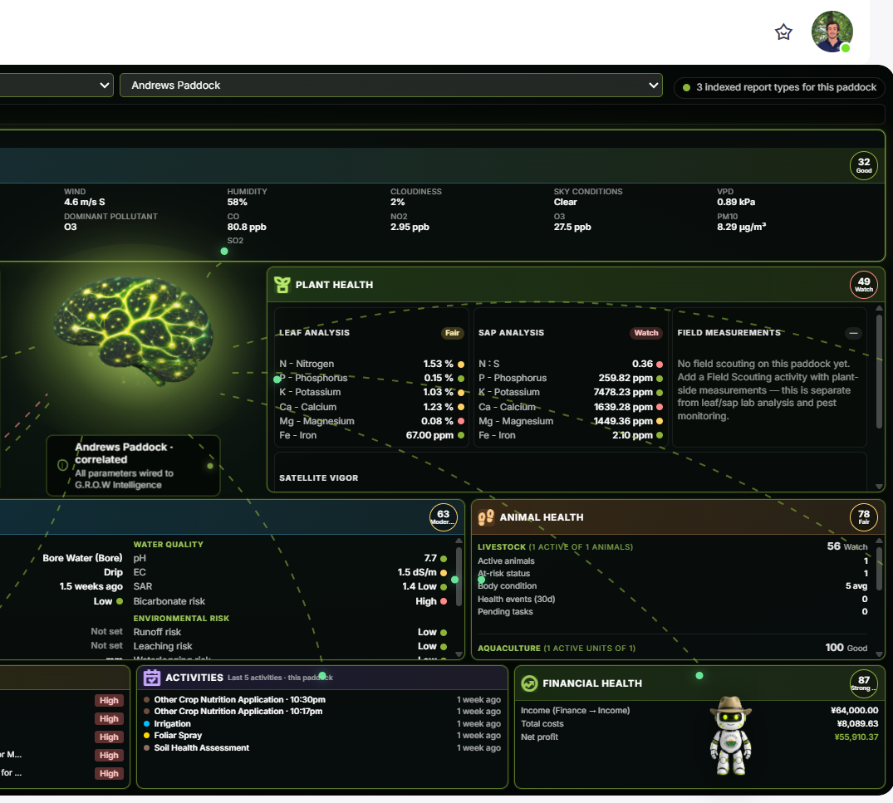
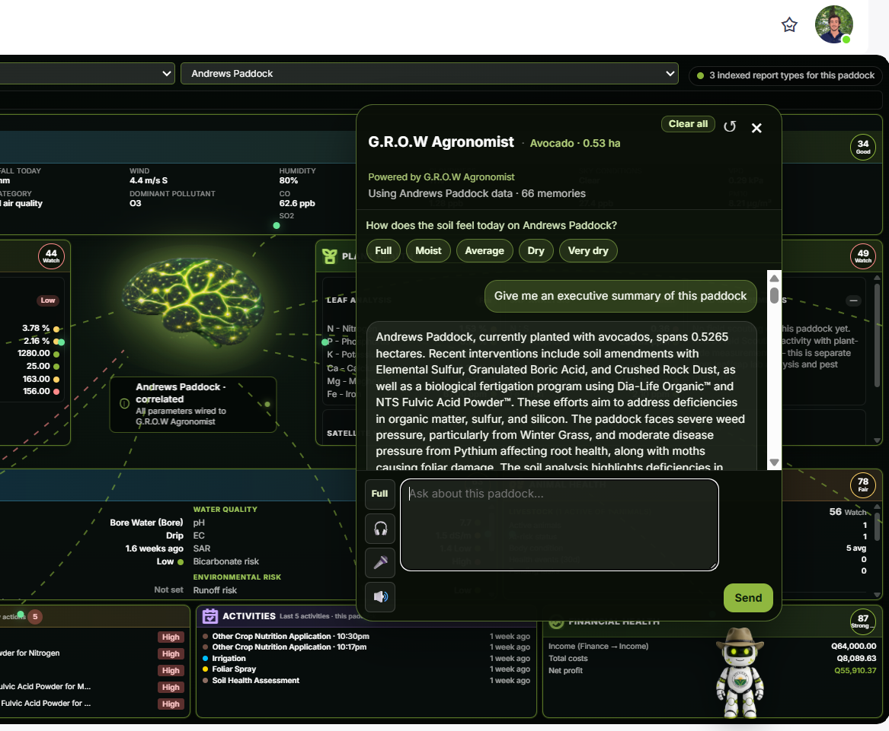
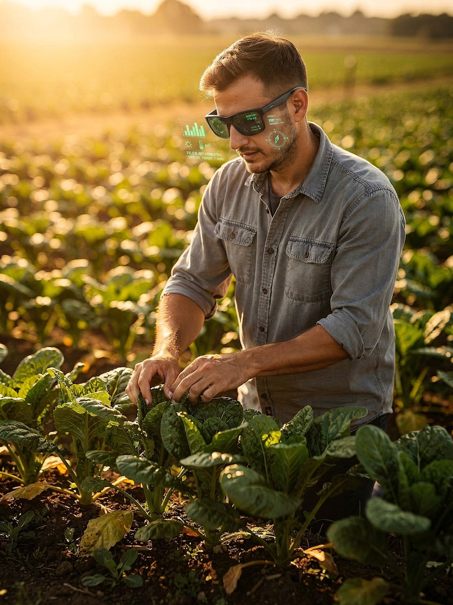

NTS G.R.O.W Agronomist
The intelligence layer inside NTS G.R.O.W — connecting the Blueprint, Brain, dashboard modules, and chatbot/avatar to guide smarter agronomic decisions.

The intelligence layer inside NTS G.R.O.W — connecting the Blueprint, Brain, dashboard modules, and chatbot/avatar to guide smarter agronomic decisions.

Modern farms generate an enormous volume of data — across paddocks, soil tests, leaf and sap reports, satellite imagery, weather feeds, irrigation and fertigation logs, spray records, field observations, pest and disease reports, activity logs, and financial records. But this data rarely lives in one place.
When data is fragmented, it cannot be connected. And when data cannot be connected, AI cannot reason properly. The result is generic advice with no real understanding of your specific farm.
The Blueprint is a Setup Wizard — a guided, step-by-step process that walks farmers through entering all the information the G.R.O.W Agronomist needs to work at its best. From farm boundaries, paddock structure, soil data, leaf and sap analysis, irrigation setup, weather feeds, satellite connections, field activities, crop protection programs, and financial records.
Boundaries, paddocks, crops, and spatial layout mapped and verified.
Lab results linked directly to paddocks for precise nutritional context.
Irrigation setup, weather feeds, and satellite imagery structured and connected.
Field activities, nutrition/crop protection programs, financial records, inventory, and farm management data.
The G.R.O.W Brain is not a search engine or a generic AI assistant. It is a purpose-built agronomic intelligence layer trained to understand the relationships between soil health, crop nutrition, weather patterns, pest cycles, irrigation needs, and financial outcomes.
It produces actionable recommendations, seasonal plans, risk alerts, and clear explanations — delivered through natural language, whenever you need them.
Connects data across all farm parameters.
Flags risks, gaps, and emerging issues.
Generates plans and actionable advice.
Answers questions through chat and voice.
The G.R.O.W Agronomist is only possible when both layers operate together. The Blueprint provides the structured, validated farm data. The Brain transforms that data into intelligent agronomic reasoning.
No reliable context. The AI is reasoning blind — outputs are generic and untrustworthy.
No intelligent reasoning. Data sits idle — collected but never connected or acted upon.
Real agronomic intelligence — structured data meets contextual reasoning at farm scale.
G.R.O.W Agronomist becomes the digital agronomist inside the platform — always connected to the farm, always learning from the data, and always ready to guide better decisions.

Live to every layer of your farm — from satellite to soil test.
Continuously updated as new data, observations, and results come in.
Available through chat and voice — wherever decisions are made.
Empower your team with real-time agronomic intelligence directly in the field. With G.R.O.W on Meta Glasses, farmers and agronomists can interact with the Agronomist hands-free, seamlessly integrating field observations, voice queries, and instant data capture into daily operations.

Ask questions by voice and receive instant agronomic answers and recommendations on the spot, without breaking stride.
Snap pictures of crops, pests, or disease with a glance; observations are automatically logged and linked to the specific paddock.
Record field notes, activities, and data entries using only your voice, syncing directly into the G.R.O.W Blueprint.
NTS G.R.O.W Agronomist connects the Blueprint, the Brain, and every layer of your farm — turning fragmented data into intelligent agronomic guidance, wherever the work happens.